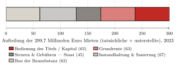
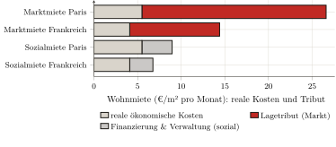
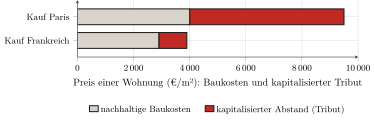

— KI-Übersetzung — Claude Fable 5 (Anthropic)
Dritter Teil — Empirische Messung der Abschöpfung · Kapitel 9
9 Die Wohnrente: der Bewohner
[…] mich in Begriffen von Zahl, Gewicht oder Maß auszudrücken, nur Argumente zu gebrauchen, die den Sinnen entstammen, und nur solche Ursachen in Betracht zu ziehen, die ein sichtbares Fundament in der Natur haben.
William Petty, Political Arithmetick (1690)
Die beiden vorangegangenen Teile haben das Terrain freigeräumt. Wir haben gesehen, wie die Volkswirtschaftliche Gesamtrechnung den Wegzoll zur Produktion befördert (Kapitel 6), wie die Nomenklaturen ihn zerstreuen, bis er unkenntlich wird (Kapitel 7), und wie die Theorien, die ihn rechtfertigen, vor den Zahlen ihrer eigenen Institutionen einknicken (Kapitel 8). Bleibt die Frage, die das ganze Buch bis hierher aufgeschoben hat: wie viel? Von dem, was ein Haushalt für das Wohnen entrichtet, welcher Teil bezahlt eine wirklich produzierte Wohnung, und welcher Teil ist nichts als ein Tribut auf den Zugang zum Boden? Die Antwort wird zuerst für das Wohnen gegeben, die erste und schwerste der drei Messungen, die Teil III zusammensetzt. Die Methode ist die, die die Kapitel 6 und 7 vorgeschrieben haben: die vom Statistiker des Staates veröffentlichten Zahlen aufnehmen und sie umgruppieren, nicht mehr nach ihrer technischen Funktion, sondern nach dem realen Verhältnis: was eine Produktion bezahlt, was einen Wegzoll erhebt. Allein aus den amtlichen Aggregaten, so dass jedermann die Rechnung nachvollziehen kann. Mit der Disziplin, die die Kapitel 1 und 3 festgelegt haben: niemals den Zins des wirklich eingebrachten Kapitals als Rente zählen, noch den Tribut des Titels als Produktion. Und mit der Wache, die Kapitel 7 aufgestellt hat: denselben Strom nicht zweimal zählen.
9.1 Die Miete, und was sie deckt: Zerlegung eines Aggregats
Gehen wir vom am wenigsten bestreitbaren Aggregat aus. Im Jahr 2023 belaufen sich die Mieten (tatsächliche und unterstellte), die für den französischen Wohnungsbestand gezahlt oder „geschuldet“ werden, auf 299,7 Milliarden Euro: 91,1 Milliarden tatsächliche Mieten, entrichtet von den Mietern, und 208,6 Milliarden unterstellte Mieten, die den selbstnutzenden Eigentümern per Konvention zugerechnet werden.1 Dieser Block von 300 Milliarden ist es, den dieses Kapitel zerlegt.
Die Wohnungsrechnung aber zerlegt ihn nicht. Sie führt die Miete als eine einzige Masse, deren Wertschöpfung zur Gänze ein Betriebsüberschuss des „Produzenten“ Vermieter ist — die Konvention, die Kapitel 6 auseinandergenommen hat.2 An uns ist es, sie aufzuteilen, anhand der Größen, die das SDES anderweitig veröffentlicht. Drei Blöcke lassen sich isolieren.
Was eine reale Produktion bezahlt, zuerst. Die Wohnung wird gebaut und instand gehalten: das ist wirkliche Arbeit, die als solche gutzuschreiben ist. Die Investitionen in Neubauwohnungen belaufen sich auf 82 Milliarden; doch dieser Rahmen schließt den Kauf der Baugrundstücke ein (18,6 Milliarden), der keine Produktion ist: das SDES erkennt es selbst an, indem es den Boden unter die „nicht produzierten“ Aktiva einordnet (Kapitel 7).3 Der eigentliche Bau (die Bausubstanz ohne Boden: das, was Haushalte, Vermieter und Träger den Bauunternehmen für die Errichtung der Neubauwohnungen zahlen, vom Rohbau bis zum Ausbau) bindet also etwa 62 Milliarden; das ist in der Rechnung die Zeile „Bau“ selbst, sobald das Grundstück beiseitegelegt ist.4 Hinzu kommen die größeren Instandhaltungs- und Verbesserungsarbeiten am bestehenden Bestand (Fassadensanierungen, Dächer, Heizkessel, energetische Sanierung): 67 Milliarden.5 Reale Wohnungsproduktion: rund 129 Milliarden.
Was der Staat erhebt, sodann. Die Grundsteuer auf bebaute Grundstücke (28,4 Milliarden) und die Grunderwerbsabgaben (13,0 Milliarden) treffen das Renditeobjekt, ohne irgendeinen Wohndienst zu vergüten: es sind Abgaben, und sie erhöhen, was der Nutzer aufwendet, aber sie fließen nicht dem Rentier zu — sie fließen der Gemeinschaft zu (Kapitel 6).6 Das sind etwa 45 Milliarden.
Der Rest, schließlich — und das ist der Tribut. Ziehen wir von den 300 Milliarden Mieten die 129 der realen Produktion und die 45 der Abgaben ab: es verbleiben, als Residuum, rund 126 Milliarden Euro (42 % der gesamten Miete), die weder einen Bau noch eine Instandhaltung noch eine Steuer bezahlen, sondern das bloße Recht, Zugang zu einer Lage zu erhalten. Das ist die Wohnrente: der Wegzoll, den der Nutzer dem Rentier fürs Wohnen entrichtet (Abbildung 1.1).

Präzisieren wir den Status dieser Zahl. Sie ist kein Posten, der aus einem Tableau abgelesen wäre: sie ist ein Residuum, gewonnen, indem von einem belegten Aggregat zwei andere belegte Aggregate abgezogen werden. Ihre Festigkeit hängt also an der ihrer Bestandteile, und ihr schwächstes Glied ist der Bodenanteil des Neubaus. Nun hat man ihn so niedrig wie möglich angesetzt: auf den Anteil, den die volkswirtschaftliche Rechnung selbst ausweist (22,7 % des Neubaus). Jede realistischere Annahme hebt die Abschöpfung nur an: auf 30 % gesetzt (der Anteil eines typischen Projekts), steigt sie auf 131 Milliarden; auf 40 %, das Niveau der Île-de-France, auf 139. Die Wohnrente liegt also zwischen 126 Milliarden (der Untergrenze, 42 % der Miete) und 139, und es ist die Untergrenze, die wir festhalten.7 Und eine Wache hält diese Zahl an ihrem Platz: da die Kreditzinsen bereits abgezogen wurden, um den Nettoüberschuss des Vermieters zu erhalten, darf man sie nicht wieder hinzurechnen, ohne denselben Strom zweimal zu zählen (Kapitel 7); die Wohnungsabschöpfung endet also bei 126 Milliarden, und nichts berechtigt dazu, sie darüber hinaus anzusetzen.
9.2 Das „Kapital“ ist kapitalisierter Tribut
Eine Einwendung stellt sich sogleich ein, und sie trifft den Kern der Methode. Ein Teil dieser 126 Milliarden (etwa die Hälfte) vergütet nicht die nackte „Grundrente“, sondern das Kapital des Vermieters: die Zinsen, die er bedient, und den Profit, den er aus der im Gut gebundenen Summe zieht. Nun hat Kapitel 3 eine umgekehrte Disziplin aufgestellt: der Zins des dem Boden wirklich einverleibten Kapitals — Drainage, Bausubstanz, Verbesserungen — ist keine Rente und muss als legitime Vergütung gutgeschrieben werden. Dieses „Kapital“ als Tribut zu zählen, heißt das nicht, die Regel zu verletzen, die man sich gegeben hat?
Nein — vorausgesetzt, man sieht, welches Kapital hier eigentlich vergütet wird. Das dem Gebäude einverleibte Kapital (das, was nötig war, um es zu errichten und zu erhalten) ist bereits gezählt, und auf der richtigen Seite: es steckt in den 129 Milliarden realer Produktion. Das Kapital, das der „Kapital“-Anteil der Miete vergütet, ist anderer Natur: es ist der Preis des Titels, das heißt die kapitalisierte Grundrente (Kapitel 3). Wenn ein Vermieter eine Wohnung erwirbt, ist das Wesentliche dessen, was er zahlt, nicht der Wiederbeschaffungspreis der Mauern: es ist der Lagewert, seinerseits gleich der abgezinsten künftigen Rente. Der Zins, den er auf diese Summe bedient, vergütet also keinerlei Produktion: er vergütet das Halten eines Rechts, das heißt die Rente in ihrer finanziellen Form.
Dass der Immobilienwert im Wesentlichen kapitalisierter Bodenwert ist, ist ein massiv belegtes Faktum, keine Vermutung. Knoll, Schularick und Steger haben es an vierzehn fortgeschrittenen Volkswirtschaften und über fast anderthalb Jahrhunderte gezeigt: „der Anstieg der Bodenpreise erklärt rund 80 % des weltweiten Booms der Immobilienpreise seit dem Zweiten Weltkrieg“ — mit anderen Worten, die „Levitation“ der Preise ist zu vier Fünfteln die des Bodens und nicht die des Baus.8 Für Frankreich weisen Trannoy und Wasmer nach, dass der Boden nahezu die Hälfte des Immobilienwerts des Landes ausmacht (in der Größenordnung des Dreifachen des BIP) und dass der bebaute Boden, der 1,5 % des Territoriums bedeckt, das Wesentliche dieses Werts konzentriert.9 Und Friggit, Statistiker des Staates, schließt den Beweis: der Bodenpreis ist ein Residuum, das Auffangbecken, in das sich der billige Kredit ergießt (Kapitel 4).10
Die Schlussfolgerung ist eindeutig: das „Kapital“ zu vergüten, das im Wert eines Bodentitels steckt, heißt nicht, eine Produktion zu vergüten; es heißt, einen Tribut in Form von Zins zu bedienen. Das einzige wirklich produktive Kapital, das der Mauern, ist bereits gesondert gezählt. Was übrig bleibt und was man der Abschöpfung zurechnet, ist die Rente, die das Eigentum in ein Finanzaktivum verwandelt hat. Der „Aufstieg“ zum Eigentum führt nicht aus dem Wegzoll heraus: er wechselt dessen Gläubiger (Kapitel 5). Wir kommen am Ende dieses Kapitels darauf zurück.
9.3 Die Miete und die realen Kosten: was das Wohnen kosten würde
Das makroökonomische Residuum hat sein sprechenderes Gegenstück im Maßstab einer einzelnen Wohnung. Stellen wir die Frage naiv: Was würde das Wohnen kosten, wenn die Miete nur das Wohnen bezahlte? Nehmen wir die realen ökonomischen Kosten einer Wohnung: die über ihre Lebensdauer abgeschriebene Bausubstanz, die laufende Instandhaltung, der Boden mit null angesetzt und kein zu vergütendes Kapital. Alles, was die Marktmiete über diese Kosten hinaus erhebt, ist konstruktionsgemäß Tribut.
Die Rechnung verlangt Annahmen; hier sind sie. Die Bausubstanz einer Wohnung, ohne Boden, kommt auf etwa 2 100 Euro je Quadratmeter.11 Abgeschrieben über vierundsiebzig Jahre (die Nutzungsdauer eines Wohngebäudes, wie die Kapitalrechnung sie ansetzt, und nicht das optimistische Jahrhundert), macht das etwa 28 Euro je Quadratmeter und Jahr; rechnet man eine jährliche Instandhaltung von etwa 1 % des Werts der Bausubstanz hinzu, erhält man reale ökonomische Kosten von nahezu 4 Euro je Quadratmeter und Monat.12
Die Marktmiete erreicht im nationalen Durchschnitt etwa 14 bis 15 Euro je Quadratmeter und Monat: der Haushalt zahlt also nahezu das Dreieinhalbfache der realen Kosten seiner Wohnung.13 In Paris, wo die Durchschnittsmiete des freien Sektors bei 25,7 Euro liegt, steigt das Verhältnis auf mehr als das Viereinhalbfache.14 Der Abstand ist keine rechnerische Feinheit, die an den Annahmen hinge: er beträgt eine Größenordnung, und er überlebt alle vernünftigen Varianten. Dieser Teil, der die realen Kosten übersteigt, ist nichts anderes als der Lagetribut des Kapitels 4: nicht der Preis der Ziegel, sondern der der Lage, die die ganze Stadt hervorgebracht hat und die ein Einzelner kassiert.
Der Beweis wird, im Kontrast, dort erbracht, wo die Rente in Schranken gehalten ist. Die Miete des Sozialbestands (6,76 Euro je Quadratmeter im nationalen Durchschnitt, 8,96 in Paris) hält sich weit näher an den realen ökonomischen Kosten als die freie Miete.15 Nicht dass die Sozialwohnung anders gebaut würde: ihre Miete wird außerhalb der Logik des Bodentributs festgesetzt. Die Differenz zwischen freier Miete und Sozialmiete misst, fast bloßgelegt, was der Markt für die bloße Lage zahlen lässt: der Tribut hängt nicht am Ziegel, der auf beiden Seiten identisch ist, sondern am Recht, unter dem er bewohnt wird (Abbildung 1.2).

Diese Verhältnisse scheinen das Residuum vom Anfang des Kapitels zu übersteigen: 42 % Tribut in der aggregierten Miete, aber zwei Drittel oder mehr bei der Marktmiete? Die beiden Messungen versöhnen sich, sobald man sieht, dass sie nicht dasselbe wiegen. Das Residuum von 126 Milliarden setzt die Gesamtheit der Mieten (alte Mietverträge, Sozialbestand, vorsichtig bewertete unterstellte Mieten, allesamt unter der Marktmiete) ins Verhältnis zur effektiven Produktionsausgabe des Jahres, die den Neubau einschließt, das heißt die Erweiterung des Bestands und nicht nur seine Erhaltung. Das Verhältnis dieses Abschnitts konfrontiert dagegen die Marktmiete, diejenige, der der Neuankömmling gegenübersteht, mit den nackten Kosten der bestehenden Wohnung. Das Aggregat gibt den Durchschnitt des gesamten Bestands; das Verhältnis gibt die exponierteste Sprosse, wo der Tribut zwei Drittel oder drei Viertel der Miete erreicht. Die 126 Milliarden sind also sehr wohl eine Untergrenze: in dem Maße, wie die Mietverträge zum Marktpreis erneuert werden, gleitet der gesamte Bestand auf das Verhältnis dieses Abschnitts zu.
9.4 Der Kauf, oder der in Zinsen verwandelte Wegzoll
Bleibt die verbreitetste Einwendung: der Kauf. Die eigene Wohnung zu erwerben, heißt das nicht, aus dem Wegzoll auszutreten? Kapitel 5 hat dem Recht nach geantwortet; wir bestätigen es hier in Zahlen, indem wir zeigen, dass der Kauf den Tribut nicht aufhebt, sondern konvertiert. Der gezahlte Preis ist, wie gesehen, die kapitalisierte Rente; der Erwerber begleicht ihn in einem Strom von Zinsen an die Bank, deren produktive Gegenleistung null ist.16
Die Verhältnisse bestätigen es, gestauchter als bei der Miete, weil der Kauf einen Preis mit Kosten vergleicht und nicht zwei Ströme. Der Preis einer Wohnung liegt im französischen Durchschnitt bei rund 3 900 Euro je Quadratmeter, bei nachhaltigen Baukosten von etwa 2 900: ein Drittel mehr als die Bausubstanz.17 In Paris, wo der Quadratmeter im Bestand um die 9 500 Euro gehandelt wird, bei nachhaltigen Kosten nahe 4 000, übersteigt das Verhältnis das Doppelte (Abbildung 1.3).18 Und der Abstand weitet sich noch, sobald der Kredit einbezogen ist: über fünfundzwanzig Jahre finanziert, kommt eine Wohnung von 60 Quadratmetern, Zinsen eingerechnet, auf etwa 350 000 Euro in Frankreich und nahezu 900 000 in Paris.19 Der Erwerber glaubt, ein Dach zu kaufen; er kauft vor allem eine Lage und verpflichtet sich, deren Tribut, in Form von Zinsen, ein Vierteljahrhundert lang zu bedienen. Der Weg zum Eigentum, den man als Ausweg darstellt, verschiebt somit nur den Wegzoll, der Namen und Gläubiger wechselt, ohne zu verschwinden.

Bilanz
Die französische Wohnrente beziffert sich auf rund 126 Milliarden Euro pro Jahr, das heißt 42 % der Mieten und mehr als ein Zehntel der Wohnausgabe. Das ist keine hingeworfene Zahl: es ist ein Residuum, gewonnen, indem von einem amtlichen Aggregat die reale Wohnungsproduktion und die Abgaben an den Staat abgezogen werden; reproduzierbar allein aus den öffentlichen Daten; robust über das ganze Intervall der vertretbaren Annahmen (126 bis 139 Milliarden, wobei die Untergrenze festgehalten wird); und an jeder Weggabelung auf der Seite genommen, die sie mindert. Derselbe Tribut lässt sich im Maßstab einer einzelnen Wohnung ablesen: Wohnen kostet in Paris nahezu das Fünffache dessen, was die bloße Behausung kosten würde, und sie zu kaufen mehr als das Doppelte, wobei der Abstand überall der Preis der Lage ist. Ob man das „Kapital“ des Vermieters vergütet oder die Zinsen des Erwerbers, man bedient, im Verhältnis des Bodens, eine kapitalisierte Rente ohne produktive Gegenleistung: der Kauf hebt den Wegzoll nicht auf, er konvertiert ihn.
Mit diesem ersten Tribut ist die Messung nicht abgeschlossen. Der Tribut auf den Raum lastet nicht nur auf dem Bewohner: er lastet auch auf dem Arbeiter, durch die Miete der Betriebsstätten, die er entrichtet, ohne sie im Preis dessen zu sehen, was er konsumiert. Hinzu kommt, davon unterschieden, die Extraktion der Margen, die sich in der Kette auftürmen, die die Bausubstanz produziert. Das ist der Gegenstand des folgenden Kapitels: nach dem sichtbaren Teil des Wegzolls, der Miete, gilt es, seinem überwälzten Teil zu folgen.
(Service des données et études statistiques (SDES) 2024a), Abbildung 3.4 (S. 31). Diese Mieten sind Teil einer gesamten Wohnausgabe von 611,7 Milliarden Euro, das heißt 21,7 % des Bruttoinlandsprodukts (ibid., Abb. 1.10, S. 18). Zur Natur der unterstellten Miete — ein Einkommen, das niemand zahlt — siehe Kapitel 6; wir übernehmen sie hier so, wie die Rechnung sie ansetzt, ohne darauf zurückzukommen.↩︎
(Service des données et études statistiques (SDES) 2024a): die unterstellte Miete wird durch Mietäquivalenz konstruiert (die Miete, die der Eigentümer für eine identische, privat vermietete Wohnung entrichten würde), und dann als Produktion verbucht. Die Rechnung unterscheidet innerhalb der Miete niemals, was die Behausung bezahlt und was die Lage bezahlt. Diese Zerlegung ist also keinem Tableau des SDES entnommen: sie ist die Rekonstruktion, die dieses Buch an den veröffentlichten Aggregaten vornimmt — genau die Umgruppierung „nach dem realen Verhältnis“, die Kapitel 7 gefordert hatte.↩︎
(Service des données et études statistiques (SDES) 2024a), Abb. 4.1 (S. 42): Investitionen in Neubauwohnungen 82,0 Mrd. € = Bau (Gebäude) 62,3 + Grundstücke 18,6 + Nebenkosten 1,2. Das Grundstück abzuziehen ist die strikte Anwendung der Disziplin von Kapitel 1: der Boden wird nicht produziert.↩︎
Nämlich der Posten „Bau (Gebäude)“ der Abbildung 4.1 (62,3 Mrd. €), das Grundstück (18,6) ist bereits isoliert. Man hält sich damit an den niedrigsten Bodenanteil — den, den die volkswirtschaftliche Rechnung selbst ausweist (22,7 % des Neubaus), noch unter dem „knappen Drittel“ eines typischen Projekts, das die SDES-Erhebung über Baugrundstücke ermittelt ((Service des données et études statistiques (SDES) 2024b)), und unter den 40 bis 50 % der Île-de-France ((Notaires du Grand Paris 2021)). Diesen Minimalanteil anzusetzen mindert die Abschöpfung: jede realistischere Bodenannahme würde sie anheben (infra).↩︎
(Service des données et études statistiques (SDES) 2024a), Abb. 4.1 (S. 42), „größere Instandhaltungs- und Verbesserungsarbeiten“, 67,2 Mrd. €. Das ist, neben dem Bau der Gebäude, die andere Seite der realen Wohnungsproduktion: eine Arbeit, die den Gebrauchswert des Bestands erhält, ja erhöht.↩︎
(Service des données et études statistiques (SDES) 2024a), Abb. 6.1 (S. 71–72). Wir setzen hier einen weiten Umfang der Abgaben an (≈ 45 Mrd. €); sich allein an die residenzielle TFPB und die DMTO im engen Sinn zu halten (41,4 Mrd. €) würde das abgeschöpfte Residuum um ebenso viel erhöhen. Die Wahl ist also auch hier konservativ. Zur Erinnerung aus Kapitel 7: diese Summen werden unter „Abgaben“ verbucht, nie auf den Tribut bezogen, den sie treffen.↩︎
Die interne Aufteilung des Residuums zwischen „Grundrente“ und „Bedienung des Titels“ (≈ 63 + 63 in der Abbildung) ist indikativ: sie ändert nichts an der Summe, da das eine wie das andere abgeschöpft ist. Friggit hat gezeigt, dass der Bodenpreis ohnehin ein Residuum ist: „es ist der Preis der Wohnungen der Nachbarschaft, der […] den Preis der Grundstücke bestimmt, und nicht umgekehrt“ ((Friggit 2024)).↩︎
Knoll, Schularick, Steger (2017); Übersetzung von uns. Die Unterscheidung ist für die Messung entscheidend: wenn der Preisanstieg zu 80 % Anstieg des Bodens ist, dann bedient der auf den Kaufpreis gezahlte Zins in eben diesem Verhältnis den kapitalisierten Tribut — nicht die Bausubstanz.↩︎
(Trannoy, Wasmer 2022): der Boden ≈ 44 % des französischen Immobilienwerts, ≈ 3-mal das BIP; der bebaute Boden ≈ 84 % des Werts aller Grundstücke. Ökonomen liberaler Tradition — Belastungszeugen, keine Anhänger der These.↩︎
(Friggit 2024). Der Mechanismus, bereits in Kapitel 4 dargelegt: das leichte Geld bläht die Zahlungsfähigkeit der Haushalte auf, und es ist der Bodenpreis, der es absorbiert. Der Zins, den der Erwerber oder der Vermieter entrichtet, ist im Wesentlichen die Bedienung dieses kapitalisierten Bodens.↩︎
(Union sociale pour l’habitat, Banque des Territoires 2024) (USH–Banque des Territoires, Éclairages Nr. 33, 2023): Gestehungskosten 2 550 €/m² Nutzfläche in Frankreich, davon Bauarbeiten 1 790, Boden 520, sonstige Lasten 320; die Bausubstanz ohne Boden ≈ 2 100 €/m². Wir übernehmen diese Kosten des sozialen Wohnungsbaus, die die am besten gesicherte öffentliche Angabe sind; der private Wohnungsbau unterscheidet sich davon nicht in der Größenordnung.↩︎
(OCDE 2009), Kap. 13: mittlere Nutzungsdauer von Wohngebäuden 74 Jahre (Spanne 40–95). Rechnung: 2 100 €/m² ÷ 74 Jahre ≈ 28 €/m²/Jahr Abschreibung; + 1 % Instandhaltung ≈ 21 €/m²/Jahr; zusammen ≈ 49 €/m²/Jahr, also ≈ 4,1 €/m²/Monat. Das Ergebnis hängt an zwei Hebeln, zu denen man steht: eine kürzere Lebensdauer oder eine höhere Instandhaltung heben es an. Wir haben hier die zentralen Werte der Literatur genommen, nicht die der These günstigsten; selbst so bleibt der Abstand zum Markt eine Größenordnung.↩︎
Nationale Marktmiete: Größenordnung 15 €/m² ((SeLoger / Bien’ici 2026)); die Inseratsangabe „einschließlich Nebenkosten“ von (LocService 2024) (17 €/m²) liegt etwas höher, da die Basis abweicht (Fluss, Nebenkosten eingeschlossen). Wir nehmen die untere Spanne, ohne Nebenkosten, vergleichbar mit den ökonomischen Kosten.↩︎
(Observatoire des loyers de l’agglomération parisienne (OLAP) 2025): Durchschnittsmiete 25,7 €/m²/Monat (Paris intra-muros, freier Sektor, unmöbliert, zum 1. Januar 2024; 26,3 ein Jahr später). Die realen ökonomischen Kosten liegen dort etwas höher (teureres Bauen), bei etwa 5,5 €/m²/Monat; das Verhältnis liegt nahe fünf.↩︎
(Union sociale pour l’habitat 2025) für die durchschnittliche HLM-Miete (6,76 €/m²); die Pariser Zahl (≈ 8,96) liegt in derselben Ordnung wie die durchschnittliche Pariser Sozialmiete von etwa 9 €/m² zum 1. Januar 2024 — die höchste der Île-de-France (7,7) — (DRIHL Île-de-France 2024). Der soziale Wohnungsbau entgeht nicht allen Kosten (Finanzierung, Verwaltung), aber seine Miete wird außerhalb der Logik des Bodentributs festgesetzt: deshalb nähert er sich den realen Kosten.↩︎
(Portalez 2024) für die „Knechtung durch den Kauf“; Kapitel 5 für den Beweis dem Recht nach. Der Erwerber hat die Position des zahlenden Nutzers nicht verlassen: er entrichtet denselben Wegzoll, an einen anderen Gläubiger, solange er zurückzahlt.↩︎
Preis: durchschnittliche Wohnung Frankreich ≈ 3 918 €/m² ((SeLoger / Bien’ici 2026)); nachhaltige Kosten der Bausubstanz ≈ 2 900 €/m² (Baukosten zuzüglich einer Qualitätsprämie, (Union sociale pour l’habitat, Banque des Territoires 2024)). Verhältnis ≈ 1,35.↩︎
Standardisierter Pariser Preis 2024: ≈ 9 500 €/m² (Notare des Grand Paris); die Spitze von 2021–2022 (≈ 10 600) wurde teilweise korrigiert. Nachhaltige Kosten der Bausubstanz in der Île-de-France ≈ 4 000 €/m². Verhältnis ≈ 2,3.↩︎
Kredit über 25 Jahre zu 3,5 %: die Gesamtkosten (Kapital + Zinsen) erhöhen den Kaufpreis um etwa die Hälfte. Die Zinsen bedienen, im Verhältnis des Bodenanteils am Preis (Kapitel 4), den kapitalisierten Tribut: das ist die Konversion des Wegzolls in Schuldendienst.↩︎